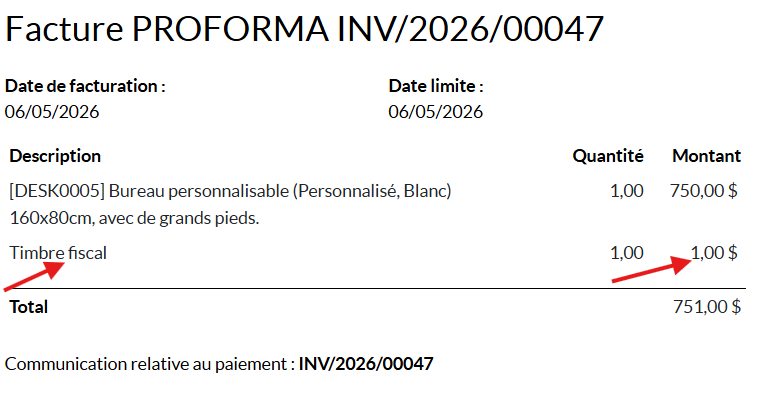

Conforme à la règlementation tunisienne - installation en un clic, sans saisie manuelle.
En Tunisie, les factures clients doivent inclure le droit de timbre fiscal (généralement 1,000 DT). Sans automatisation, chaque facture exige une ligne saisie à la main, source d'oublis, d'erreurs de montant et d'écarts comptables.
Ce module ajoute automatiquement la ligne « Timbre Fiscal » sur chaque facture client en brouillon, avec le bon montant et sans TVA, directement intégrée au total de la facture.
Exemple réel : la ligne timbre apparaît proprement sous les articles, avant le total.

C'est tout. Le produit « Timbre Fiscal » et les paramètres par défaut sont créés à l'installation.
Mode développeur → Paramètres → Paramètres techniques → Paramètres système :
| Clé | Description | Défaut |
|---|---|---|
timbre_fiscal_tn.amount |
Montant du timbre en dinars | 1.0 |
timbre_fiscal_tn.on_customer_invoice |
Activer sur les factures clients | True |
timbre_fiscal_tn.on_vendor_bill |
Activer sur les factures fournisseur | False |
Sur chaque facture, le champ « Appliquer le timbre fiscal » permet d'activer ou de désactiver le timbre au cas par cas.
l10n_tn)account, productInstallation, personnalisation ou accompagnement pour votre entreprise en Tunisie : contactez directement le développeur.
Auteur : AKREM KHELIFI